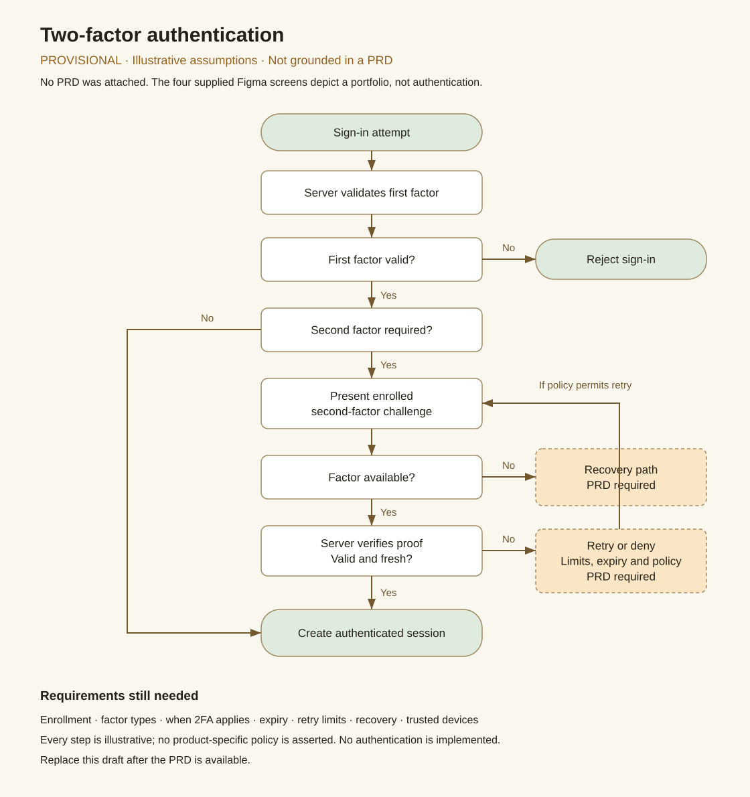

2FA flow — provisional
No PRD was attached. This is an illustrative draft, not a confirmed product flow. Authentication is separate from the four portfolio screens.
Download SVG · Download editable Mermaid source · Open portfolio


No PRD was attached. This is an illustrative draft, not a confirmed product flow. Authentication is separate from the four portfolio screens.
Download SVG · Download editable Mermaid source · Open portfolio
